老铁，这年头不会点Git真不行！！！
版本控制
说到版本控制，脑海里总会浮现大学毕业是写毕业论文的场景，你电脑上的毕业论文一定出现过这番景象！
1 2 3 4 5 6 7 8 9 10 11 | 毕业论文_初稿.doc毕业论文_修改1.doc毕业论文_修改2.doc毕业论文_修改3.doc毕业论文_完整版1.doc毕业论文_完整版2.doc毕业论文_完整版3.doc毕业论文_最终版1.doc毕业论文_最终版2.doc毕业论文_死也不改版.doc... |
以上就是使用最原始的方式进行版本控制，但是这种方式有显著缺点：
- 多个文件，保留所有版本时，需要为每个版本保存一个文件...
- 协同操作，多人协同操作时，需要将文件打包发来发去...
- 容易丢失，被删除意味着永远失去...（可以选择网盘）
为了解决以上版本控制存在问题，应运而生了一批版本控制工具：VSS、CVS、SVN、Git等，其中Git属于绝对霸主地位。
注意：一般版本控制工具包含两部分
- 客户端（本地）：本地编写内容以及版本记录
- 服务端（网盘）：将内容和版本记录同时保存在远程（可有可无）
GIT介绍
Git 是一个开源的分布式版本控制软件,用以有效、高速的处理从很小到非常大的项目版本管理。 Git 最初是由Linus Torvalds设计开发的，用于管理Linux内核开发。Git 是根据GNU通用公共许可证版本2的条款分发的自由/免费软件，安装参见：http://git-scm.com/
GitHub是一个基于Git的远程文件托管平台（同GitCafe、BitBucket和GitLab等）。
Git本身完全可以做到版本控制，但其所有内容以及版本记录只能保存在本机，如果想要将文件内容以及版本记录同时保存在远程，则需要结合GitHub来使用。使用场景：
- 无GitHub：在本地 .git 文件夹内维护历时文件
- 有GitHub：在本地 .git 文件夹内维护历时文件，同时也将历时文件托管在远程仓库
其他：
集中式：远程服务器保存所有版本，用户客户端有某个版本
分布式：远程服务器保存所有版本，用户客户端有所有版本
Git使用之小P创业史：初创期
小P是一个年轻有为程序员，从小立志要干出一番大事，某个深夜小P在网上查找**老师主演的学习视频，花了1个小时才找到想要的资源，小P想到和自己一样的有为青年每天花费大量的时间寻找喜欢老师的作品，感觉自己干大事的机会来了，毅然决然选择创业，创建一个**平台，提供**老师的所有资源！！！
创业初期，小P独自封闭开发一个月，第一个版本终于上线：
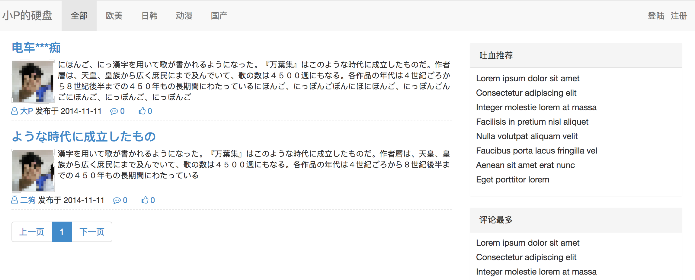
回顾开发过程，其中辛酸只有小P自己知道。上线完成后的某一天，小P猛然看到自己开发目录，卧槽这拓麻也太乱了，加入那天程序出问题回滚到上个版本的时候，自己都找不到确定版本，并且我老子做的这个系统日后是要成千上万人来维护开发，这种通过原始文件来保存版本的形式简直Low到爆啊。
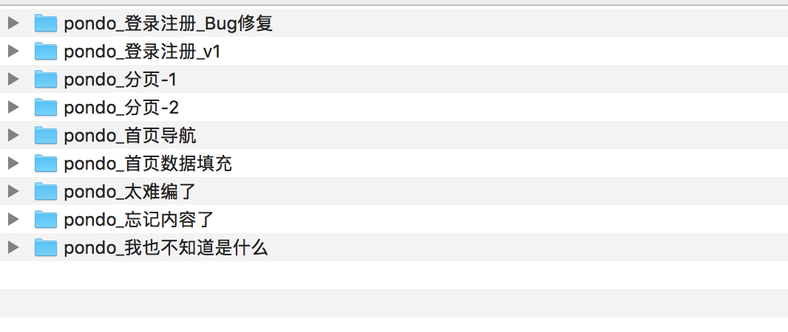
开始调研：小P发现了版本控制神奇Git，但是都是道听途说，到底牛逼成什么样子也不清楚，所以抱着试试看的态度，小P开始使用Git进行版本控制。
MacBook-Pro-4:pondo wupeiqi$pwd# 进入程序目录/Users/wupeiqi/PycharmProjects/pondoMacBook-Pro-4:pondo wupeiqi$ git init# git初始化Initialized empty Git repositoryin/Users/wupeiqi/PycharmProjects/pondo/.git/初始化后，会在当前目录自动创建 .git 文件夹，该文件是Git中最重要的文件夹，因为Git相关文件以及版本都将保存在该文件夹中，有了它，妈妈再也不用担心我好多文件来记录版本了，通过Git命令可以将所有版本保存在 .git 文件中，两条命令创建一个版本：
MacBook-Pro-4:pondo wupeiqi$ git status# 查看当前git状态On branch masterInitial commitUntracked files:(use"git add <file>..."to includeinwhat will be committed).idea/app01/db.sqlite3manage.pypondo/readmetemplates/nothing added to commit but untracked files present (use"git add"to track)MacBook-Pro-4:pondo wupeiqi$ git add .# 添加当前目录下所有文件到版本库MacBook-Pro-4:pondo wupeiqi$ git commit -m'第一次提交'# 提交到版本库，并填写版本说明，以便以后回滚。[master (root-commit) df47fe4] 第一次提交33 files changed, 879 insertions(+)create mode 100644 .idea/dictionaries/wupeiqi.xmlcreate mode 100644 .idea/encodings.xmlcreate mode 100644 .idea/inspectionProfiles/profiles_settings.xml...注意：执行git commit 命令时，可能会提示进行用户和邮箱的配置，该配置用于记录当前版本由那个用户提交
- git config --local user.name 'shadow'
- git config --local user.email 'you@example.com'
Git把管理的文件分为了两个区域四个状态。
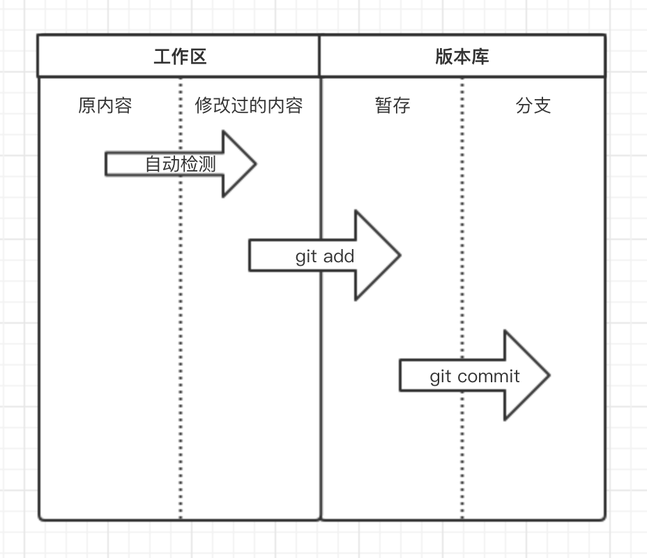
工作区：当前开发程序所在目录称为工作区，即：工作开发都是在该目录，该区域的文件会有状态的变化且状态由git自动检测，如果程序中文件做任何操作（增、删、改），文件状态均会被检测到，可以使用 【git status】命令查看。
 View CodeMacBook-Pro-4:pondo wupeiqi$ ls # 查看原程序目录 app01 db.sqlite3 manage.py pondo readme static templates MacBook-Pro-4:pondo wupeiqi$ git status # 查看git当前状态 On branch master nothing to commit, working tree clean MacBook-Pro-4:pondo wupeiqi$ touch a.py # 创建新文件 MacBook-Pro-4:pondo wupeiqi$ ls a.py app01 db.sqlite3 manage.py pondo readme static templates MacBook-Pro-4:pondo wupeiqi$ git status # 查看git当前状态，检测到：工作区 a.py 发生变化 On branch master Untracked files: (use "git add <file>..." to include in what will be committed) a.py nothing added to commit but untracked files present (use "git add" to track)
View CodeMacBook-Pro-4:pondo wupeiqi$ ls # 查看原程序目录 app01 db.sqlite3 manage.py pondo readme static templates MacBook-Pro-4:pondo wupeiqi$ git status # 查看git当前状态 On branch master nothing to commit, working tree clean MacBook-Pro-4:pondo wupeiqi$ touch a.py # 创建新文件 MacBook-Pro-4:pondo wupeiqi$ ls a.py app01 db.sqlite3 manage.py pondo readme static templates MacBook-Pro-4:pondo wupeiqi$ git status # 查看git当前状态，检测到：工作区 a.py 发生变化 On branch master Untracked files: (use "git add <file>..." to include in what will be committed) a.py nothing added to commit but untracked files present (use "git add" to track)版本库：工作区检测到有文件发生变化，那么意味着较上一个版本之后对程序进行了修改，修改完成之后，可以当做下一版本进行提交，那么就是执行 【git add .】 将所有文件提交到暂存区，然后再执行【git commit -m '又一个版本'】提交到版本库的分支即可，之后可以使用【git log】命令查看版本记录。
View CodeMacBook-Pro-4:pondo wupeiqi$ ls a.py app01 db.sqlite3 manage.py pondo readme static templates MacBook-Pro-4:pondo wupeiqi$ git status # 文件颜色为红色，表示在工作区的被修改状态 On branch master Untracked files: (use "git add <file>..." to include in what will be committed) a.py nothing added to commit but untracked files present (use "git add" to track) MacBook-Pro-4:pondo wupeiqi$ git add . # 将所有相较上一次版本之后所有的修改添加到暂存状态 MacBook-Pro-4:pondo wupeiqi$ git status # 文件颜色为绿色，表示在版本库的暂存状态 On branch master Changes to be committed: (use "git reset HEAD <file>..." to unstage) new file: a.py MacBook-Pro-4:pondo wupeiqi$ git commit -m '又一次提交' # 提交到版本库的分支 [master f139d5d] 又一次提交 1 file changed, 0 insertions(+), 0 deletions(-) create mode 100644 a.py MacBook-Pro-4:pondo wupeiqi$ git log # 查看历史版本提交记录（根据版本commit值可以进行回滚） commit f139d5d0a648af06d8a1ecadd90faf572afc388a Author: 武沛齐 <you@example.com> Date: Fri Aug 11 10:02:14 2017 +0800 又一次提交 commit df47fe49fc1f14d9cdd1534baa96f46ec71a9934 Author: 武沛齐 <you@example.com> Date: Fri Aug 11 08:49:49 2017 +0800 第一次提交目前已使用Git的四个命令，这四个命令已经可以代替本地多个文件保存版本的方式：
- git init，初始化，表示即将对当前文件夹进行版本控制。
- git status，查看Git当前状态，如：那些文件被修改过、那些文件还未提交到版本库等。
- git add 文件名，将指定文件添加到版本库的暂存状态。
- git commit -m '提交信息'，将暂存区的文件提交到版本库的分支。
- git log，查看提交记录，即：历史版本记录

调研完，小P好气自己哟，这么6的东西为什么没有早发现，从此小P的版本管理就告别繁杂的文件夹了，赶紧搞起来。
1 2 3 4 5 6 7 8 9 10 11 12 13 14 15 16 17 18 19 | MacBook-Pro-4:pondo wupeiqi$ lsapp01 db.sqlite3 manage.py pondo static templatesMacBook-Pro-4:pondo wupeiqi$ git initInitialized empty Git repository in /Users/wupeiqi/PycharmProjects/pondo/.git/MacBook-Pro-4:pondo wupeiqi$ git config --local user.name '武沛齐'MacBook-Pro-4:pondo wupeiqi$ git config --local user.email 'wupeiqi@live.com'MacBook-Pro-4:pondo wupeiqi$ git add .MacBook-Pro-4:pondo wupeiqi$ git commit -m '项目首次移植到Git控制版本'[master (root-commit) 6c439d2] 项目首次移植到Git控制版本 32 files changed, 870 insertions(+) create mode 100644 .idea/dictionaries/wupeiqi.xml create mode 100644 .idea/encodings.xml ... |
恰好，此时需要开发一个非洲专区的功能，再也不用重新copy一遍文件了，在工作区直接开始搞起来，30分钟开发测试完成，又一个版本完成了咯！！！
1 2 3 4 5 6 7 8 9 10 11 12 13 14 15 16 | MacBook-Pro-4:pondo wupeiqi$ git status # 非洲专区功能的开发，仅对app01/views.py进行了修改On branch masterChanges not staged for commit: (use "git add <file>..." to update what will be committed) (use "git checkout -- <file>..." to discard changes in working directory) modified: app01/views.pyno changes added to commit (use "git add" and/or "git commit -a")MacBook-Pro-4:pondo wupeiqi$ git add .MacBook-Pro-4:pondo wupeiqi$ git commit -m '非洲专区上线'[master 0972f4b] 非洲专区上线 1 file changed, 3 insertions(+), 1 deletion(-)MacBook-Pro-4:pondo wupeiqi$ |
非洲专区上线一个月后，接连收到用户投诉，原来清新脱俗的小P那里去了？怎么变得如此重口味？想回到过去....
小P向来秉承为人民服务的原则，人民不想看那一定要修改。决定：回滚，回到上一个版本。
那么问题来了？
一个月过去了，代码修改的位置早就忘记了，怎么修改，总不能再开发一遍吧。机智的小P猜想Git既然这么牛逼，应该会提供这样的功能，经过一番查找，果不其然Git提供了这个回滚的功能。
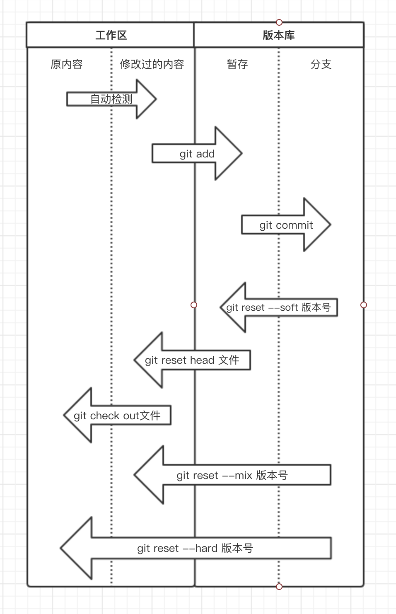
回滚到指定版本：
1 2 3 4 5 6 7 8 9 10 11 12 13 14 15 16 17 | MacBook-Pro-4:pondo wupeiqi$ git logcommit 0972f4bb43104baee15aeec2dd62bd0a307ec837Author: 武沛齐 <wupeiqi@live.com>Date: Fri Aug 11 10:54:42 2017 +0800 非洲专区上线commit 6c439d2fd0d943f36f3ee84e158ff86b052961d2Author: 武沛齐 <wupeiqi@live.com>Date: Fri Aug 11 10:42:09 2017 +0800 项目首次移植到Git控制版本MacBook-Pro-4:pondo wupeiqi$ git reset --hard 6c439d2fd0d943f36f3ee84e158ff86b052961d2HEAD is now at 6c439d2 项目首次移植到Git控制版本# 命令执行完，工作区的所有文件就变成未开发非洲专区功能之前了，太爽了有么有.... |
回滚倒是完成了，小P在想如果某一天想要在回有非洲专区功能的版本怎么办呢？来来来，不能像以往通过【git log】来查看记录再回滚了，再回去需要这么搞：
1 2 3 4 5 6 7 | MacBook-Pro-4:pondo wupeiqi$ git reflog6c439d2 HEAD@{2}: reset: moving to 6c439d2fd0d943f36f3ee84e158ff86b052961d20972f4b HEAD@{3}: commit: 非洲专区上线6c439d2 HEAD@{4}: commit (initial): 项目首次移植到Git控制版本MacBook-Pro-4:pondo wupeiqi$ git reset --hard 0972f4bHEAD is now at 0972f4b 非洲专区上线 |
Git使用之小P创业史：成长期
企业想要不被淘汰，就要跟紧时代步伐，近日直播行业日趋火热，小P的也希望自己的平台加入直播功能，已经评估预计2个月开发完成，小P开始没日没夜的干了起来...
一个月过去了，开发任务和按照预期有条不紊的进行着，直播功能也已完成一半，就是在此时线上运行平台出现Bug需要紧急修复，怎么办？怎么办？？怎么办？？？
小P出了几个解决方案：
正在开发代码不动，拷贝一份线上运行的代码进行修改 ------> 不行，又踏马回去拷贝去了。把开发了一个月的代码删掉，修改Bug，然后再重头开始 ------> 不行，一定是傻逼才这么干，我不是傻逼。- 听说git的stash可以 ------> 听说过，没见过
- 听说git的branch可以 ------> 听说过，没见过
方案一：stash
stash用于将工作区发生变化的所有文件获取临时存储在“某个地方”，将工作区还原当前版本未操作前的状态；stash还可以将临时存储在“某个地方”的文件再次拿回到工作区。
1 2 3 4 5 6 7 8 9 10 11 12 13 14 15 16 17 18 19 20 21 22 23 24 25 26 27 28 29 30 31 32 33 34 35 36 37 38 39 40 41 42 43 44 45 | acBook-Pro-4:pondo wupeiqi$ vim app01/views.py # 开发直播功能，刚开发到一半MacBook-Pro-4:pondo wupeiqi$ git statusOn branch masterChanges not staged for commit: (use "git add <file>..." to update what will be committed) (use "git checkout -- <file>..." to discard changes in working directory) modified: app01/views.pyno changes added to commit (use "git add" and/or "git commit -a")MacBook-Pro-4:pondo wupeiqi$ git stash # 将开发到一半的直播功能，临时存储到“某个地方”Saved working directory and index state WIP on master: 0972f4b 非洲专区上线HEAD is now at 0972f4b 非洲专区上线MacBook-Pro-4:pondo wupeiqi$ git status # 工作区回到当前版本未做任何操作前On branch masternothing to commit, working tree cleanMacBook-Pro-4:pondo wupeiqi$ vim pondo/settings.py # 紧急修复bugMacBook-Pro-4:pondo wupeiqi$ git statusOn branch masterChanges not staged for commit: (use "git add <file>..." to update what will be committed) (use "git checkout -- <file>..." to discard changes in working directory) modified: pondo/settings.pyno changes added to commit (use "git add" and/or "git commit -a")MacBook-Pro-4:pondo wupeiqi$ git add . # 添加到修改bug的代码到暂存状态MacBook-Pro-4:pondo wupeiqi$ git commit -m '紧急修复bug' # 提交修复Bug的代码到分支[master 1300d33] 紧急修复bug 1 file changed, 1 insertion(+)MacBook-Pro-4:pondo wupeiqi$ git stash pop # 将开发到一半的直播功能从“某个地方”再次拿会工作区继续开发On branch masterChanges not staged for commit: (use "git add <file>..." to update what will be committed) (use "git checkout -- <file>..." to discard changes in working directory) modified: app01/views.pyno changes added to commit (use "git add" and/or "git commit -a")Dropped refs/stash@{0} (059d78ca8fa204f9559bd3ce0ae76235969b4301) |
特别的：执行 git stash pop 命令时，可能会遇到冲突，因为在紧急修复bug的代码和通过stash存储在“某个地方”的代码会有重合部分，所以执行 git stash pop 时候就会出现冲突，有冲突解决冲突即可。
a. 原来内容： from django.shortcuts import render,HttpResponse def index(request): return render(request,'index.html') def africa(request): return HttpResponse('非洲专区') b. 开发到一半直播功能： from django.shortcuts import render,HttpResponse def index(request): return render(request,'index.html') def africa(request): return HttpResponse('非洲专区') def live(request): print('开发到一半') return HttpResponse('....') c. 执行git stash，回到当前版本未修改状态: from django.shortcuts import render,HttpResponse def index(request): return render(request,'index.html') def africa(request): return HttpResponse('非洲专区') d. 修复Bug并提交： from django.shortcuts import render,HttpResponse def index(request): return render(request,'index.html') def africa(request): return HttpResponse('非洲xxxxx专区') e. 继续开发直播功能 git stash pop，此时会出现冲突： MacBook-Pro-4:pondo wupeiqi$ git stash pop Auto-merging app01/views.py CONFLICT (content): Merge conflict in app01/views.py 表示app01/views.py存在冲突需要解决，此时文件内容为： from django.shortcuts import render,HttpResponse def index(request): return render(request,'index.html') def africa(request): <<<<<<< Updated upstream： # 修复Bug时更改的内容 return HttpResponse('非洲xxxx区') ======= # 修复Bug前正在开发新功能时的内容 return HttpResponse('非洲专区') def live(request): print('刚开发到一半') return HttpResponse('直播功能') >>>>>>> Stashed changes 需要自行解决冲突，然后继续开发，如： from django.shortcuts import render,HttpResponse def index(request): return render(request,'index.html') def africa(request): return HttpResponse('非洲xxxx区') def live(request): print('刚开发到一半') return HttpResponse('直播功能')
stash相关常用命令：
- git stash 将当前工作区所有修改过的内容存储到“某个地方”，将工作区还原到当前版本未修改过的状态
- git stash list 查看“某个地方”存储的所有记录
- git stash clear 清空“某个地方”
- git stash pop 将第一个记录从“某个地方”重新拿到工作区（可能有冲突）
- git stash apply 编号, 将指定编号记录从“某个地方”重新拿到工作区（可能有冲突）
- git stash drop 编号，删除指定编号的记录
方案二：branch
分支学习：branch称为分支，默认仅有一个名为master的分支。一般开发新功能流程为：开发新功能时会在分支dev上进行，开发完毕后再合并到master分支。
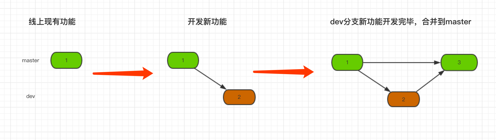
一般流程示例（上图）MacBook-Pro-4:pondo wupeiqi$ git branch dev # 创建新分支，即：拷贝一份当前所在分支代码到新分支 MacBook-Pro-4:pondo wupeiqi$ git checkout dev # 切换到dev分支 MacBook-Pro-4:pondo wupeiqi$ vim app01/views.py # 开发功能 MacBook-Pro-4:pondo wupeiqi$ git status # 查看状态，即：在dev分支修改了app01/views.py文件 On branch dev Changes not staged for commit: (use "git add <file>..." to update what will be committed) (use "git checkout -- <file>..." to discard changes in working directory) modified: app01/views.py no changes added to commit (use "git add" and/or "git commit -a") MacBook-Pro-4:pondo wupeiqi$ git add . # 将修改文件添加到版本库的暂存区 MacBook-Pro-4:pondo wupeiqi$ git commit -m '新功能开发完毕' # 将暂存区的内容提交到当前所在分支，即：dev分支 [dev 32b40cd] 新功能开发完毕 1 file changed, 2 insertions(+) MacBook-Pro-4:pondo wupeiqi$ git checkout master # 切换回master分支 Switched to branch 'master' MacBook-Pro-4:pondo wupeiqi$ git merge dev # 将dev分支内容合并到master分支 Updating 0972f4b..32b40cd Fast-forward app01/views.py | 2 ++ 1 file changed, 2 insertions(+)
学习参考上图，小P也可以按照着这样的流程进行开发，如果遇到上文开发到一般需要临时修复Bug的情况，可以按照下图的流程进行：
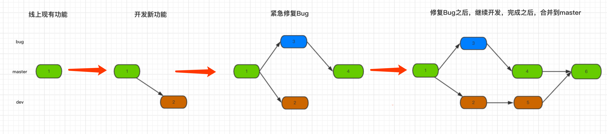
1 2 3 4 5 6 7 8 9 10 11 12 13 14 15 16 17 18 19 20 21 22 23 24 25 26 27 28 29 30 31 32 33 34 35 36 37 38 39 40 41 42 43 44 45 46 47 48 49 50 51 52 53 54 55 56 57 58 59 60 61 62 63 64 65 66 67 | MacBook-Pro-4:pondo wupeiqi$ git branch # 当前在master分支* masterMacBook-Pro-4:pondo wupeiqi$ git branch dev # 创建dev分支用于开发新功能MacBook-Pro-4:pondo wupeiqi$ git checkout dev # 切换到dev分支Switched to branch 'dev'MacBook-Pro-4:pondo wupeiqi$ vim app01/views.py # 开发新功能到一半，需要紧急修复BugMacBook-Pro-4:pondo wupeiqi$ git add .MacBook-Pro-4:pondo wupeiqi$ git commit -m '新功能开发一半'[dev b3ac2cb] 新功能开发一半 1 file changed, 2 insertions(+)MacBook-Pro-4:pondo wupeiqi$ git checkout master # 切换回master分支Switched to branch 'master'MacBook-Pro-4:pondo wupeiqi$ git branch bug # 创建bug分支MacBook-Pro-4:pondo wupeiqi$ git checkout bug # 切换到bug分支Switched to branch 'bug'MacBook-Pro-4:pondo wupeiqi$ vim pondo/settings.py # 修改bugMacBook-Pro-4:pondo wupeiqi$ git add . # 提交bugMacBook-Pro-4:pondo wupeiqi$ git commit -m '紧急修复bug' # 提交bug[bug f42f386] 紧急修复bug 1 file changed, 1 insertion(+), 1 deletion(-)MacBook-Pro-4:pondo wupeiqi$ git checkout master # 切换会masterSwitched to branch 'master'MacBook-Pro-4:pondo wupeiqi$ git merge bug # 将bug分支内容合并到master分支，表示bug修复完毕，可以上线Updating 0972f4b..f42f386Fast-forward pondo/settings.py | 2 +- 1 file changed, 1 insertion(+), 1 deletion(-)MacBook-Pro-4:pondo wupeiqi$ git checkout dev # 切换到dev分支，继续开发新功能Switched to branch 'dev'MacBook-Pro-4:pondo wupeiqi$ vim app01/views.py # 继续开发其他一半功能MacBook-Pro-4:pondo wupeiqi$ git add . # 提交新功能MacBook-Pro-4:pondo wupeiqi$ git commit -m '继续开发完成' # 提交功能[dev c0bfb27] 继续开发完成 1 file changed, 1 insertion(+)MacBook-Pro-4:pondo wupeiqi$ git checkout master # 切换回master分支Switched to branch 'master'MacBook-Pro-4:pondo wupeiqi$ git merge dev # 将dev分支合并到master分支Merge made by the 'recursive' strategy. app01/views.py | 3 +++ 1 file changed, 3 insertions(+) |
注意：git merge 时也可能会出现冲突，解决冲突的方式上述stash相同，即：找到冲突文件，手动修改冲突并提交，此处不再敖述。
branch相关常用命令：
- git branch 分支名称 创建分支
- git checkout 分支名称 切换分支
- git branch -m 分支名称 创建并切换到指定分支
- git branch 查看所有分支
- git branch -d 分支名称 删除分支
- git merge 分支名称 将指定分支合并到当前分支
Git使用之小P创业快速发展期
小P不忘初心始终如一的为广大有为青年提供资源，使得网站的访问量不断攀升，已经出具规模并赚了一些钱，有钱就要造么，索性国贸租了一间写字楼用于办公，并且也完善运营市场团队。。屌丝终归是屌丝，小P还是离不开写代码的习惯，所以开发的任务还是由自己一人承担，小P从此开始了白天在国贸写代码，晚上回天通苑写代码。PS：有钱，公司一台新电脑，家里一台原来老电脑。。。。。 妈的，故事怎么才能变得有趣呢？太拓麻难了。
小P心里开始寻思，我爱写代码，公司写，家里写，如果每天来回带一个U盘拷贝着实麻烦，Git有没有类似于云盘似得东西可以进行数据同步呢？答案肯定是有。 必须有，不然老子真的就编不下去了。
GitHub，一个基于Git实现的代码托管的平台，可以将内容以及版本记录在远程也保存一份，这样就不用U盘咯（类似于云盘）。PS: 类似GitHub的产品还有许多，如：GitLab、Bitbucket、码云等。
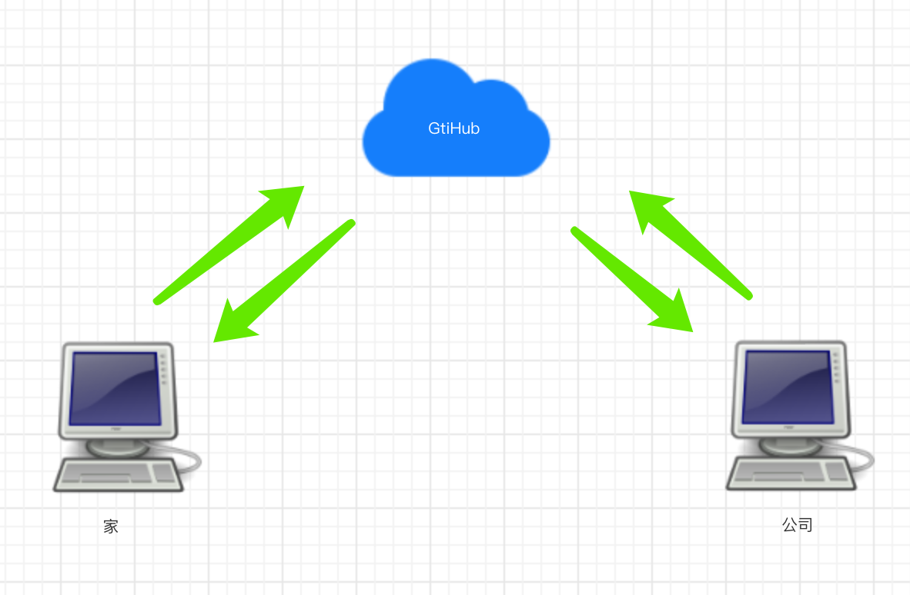
基于GitHub实现代码托管，需要一下步骤：
- 注册GitHub
- 创建仓库，创建完仓库后会有一个URL代指该仓库，如：
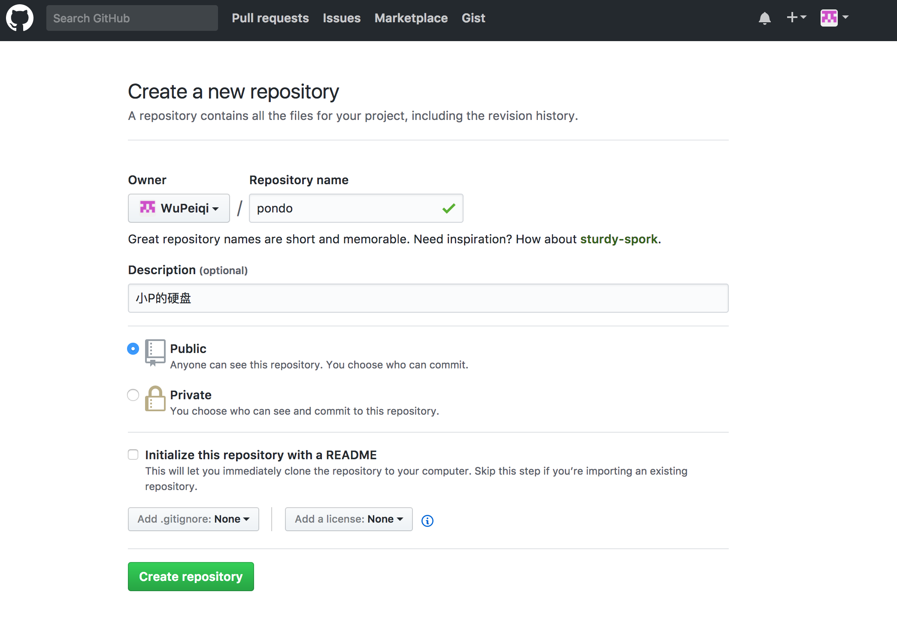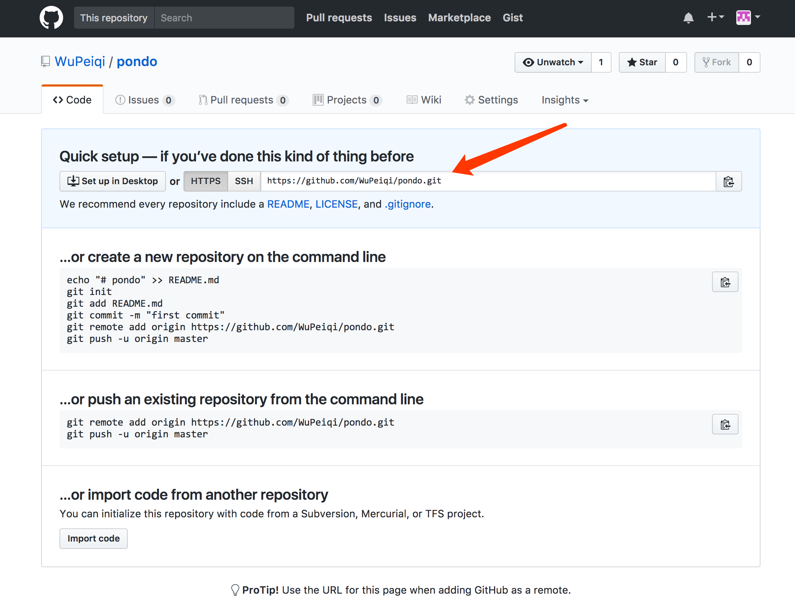 - git可以是用该URL进行向远程推送版本信息或获取版本信息
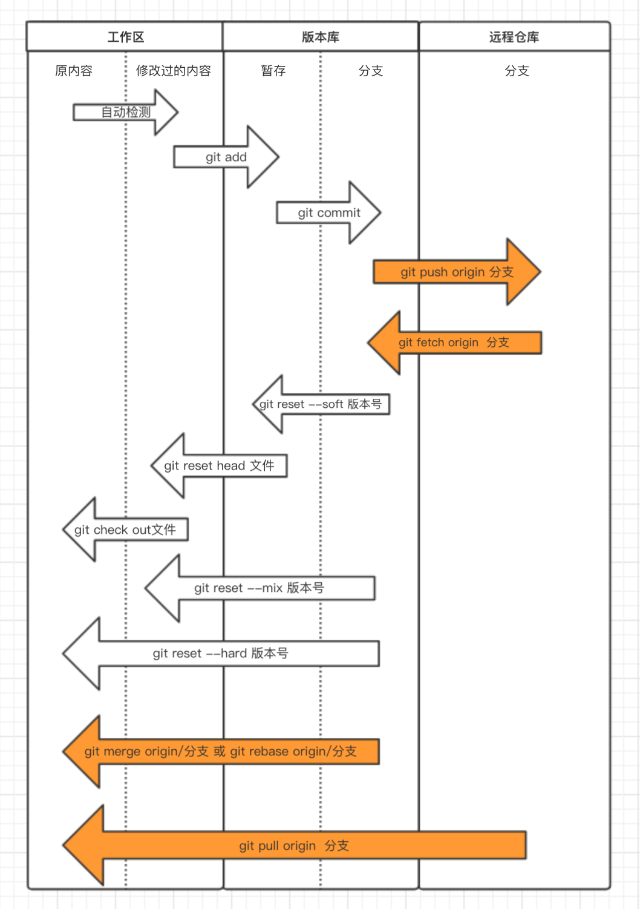
小P学会使用Git和GitHub之后，就可以基于GitHub进行代码远程托管。
在家里，小P开发完毕部分功能将代码推送到GitHub。
1 2 3 4 5 6 7 8 9 10 11 12 13 14 15 16 17 18 19 20 21 | MacBook-Pro-4:pondo wupeiqi$ git remote add origin https://github.com/WuPeiqi/pondo.git # 为地址起一个别名originMacBook-Pro-4:pondo wupeiqi$ git push origin master # 将本地master分支内容以及版本信息推送到GitHubUsername for 'https://github.com': # 输入GitHub用户名 Password for 'https://wupeiqi@github.com': # 输入GitHub密码Counting objects: 2, done.Delta compression using up to 4 threads.Compressing objects: 100% (2/2), done.Writing objects: 100% (2/2), 270 bytes | 0 bytes/s, done.Total 2 (delta 1), reused 0 (delta 0)remote: Resolving deltas: 100% (1/1), completed with 1 local object.To https://github.com/WuPeiqi/pondo.git 634aac4..274f1e4 master -> masterMacBook-Pro-4:pondo wupeiqi$ git push origin dev # 将本地dev分支内容以及版本信息推送到GitHubCounting objects: 3, done.Delta compression using up to 4 threads.Compressing objects: 100% (2/2), done.Writing objects: 100% (3/3), 261 bytes | 0 bytes/s, done.Total 3 (delta 1), reused 0 (delta 0)remote: Resolving deltas: 100% (1/1), completed with 1 local object.To https://github.com/WuPeiqi/pondo.git 274f1e4..50e2169 dev -> dev |
在公司，新电脑第一次使用，需要将代码从GitHub中获取并继续开发，开发完事下班就下班回家。
1 2 3 4 5 6 7 8 9 10 11 12 13 14 15 16 17 18 19 20 21 22 23 24 25 26 27 28 29 30 31 | MacBook-Pro-4:github wupeiqi$ git clone https://github.com/WuPeiqi/pondo.git # 将项目从GitHub中获取Cloning into 'pondo'...remote: Counting objects: 31, done.remote: Compressing objects: 100% (26/26), done.remote: Total 31 (delta 2), reused 30 (delta 1), pack-reused 0Unpacking objects: 100% (31/31), done.MacBook-Pro-4:github wupeiqi$ cd pondo/MacBook-Pro-4:pondo wupeiqi$ git Branch # 默认获取到得只有master分支* masterMacBook-Pro-4:pondo wupeiqi$ git branch dev origin/dev # 创建dev分支且和远程dev分支同步Branch dev set up to track remote branch dev from origin.MacBook-Pro-4:pondo wupeiqi$ git checkout dev # 切换到dev分支Switched to branch 'dev'MacBook-Pro-4:pondo wupeiqi$ vim app01/views.py # 继续开发新功能MacBook-Pro-4:pondo wupeiqi$ git add . # 添加文件到版本库的暂存状态MacBook-Pro-4:pondo wupeiqi$ git commit -m '公司开发功能1' # 提交新功能到版本库的分支[dev 9281447] 公司开发功能1 1 file changed, 1 insertion(+), 1 deletion(-)MacBook-Pro-4:pondo wupeiqi$ git push origin dev # 提交dev分支内容到远程GitHub托管仓库的dev分支Username for 'https://github.com': wupeiqiPassword for 'https://wupeiqi@github.com':Counting objects: 4, done.Delta compression using up to 4 threads.Compressing objects: 100% (4/4), done.Writing objects: 100% (4/4), 427 bytes | 0 bytes/s, done.Total 4 (delta 2), reused 0 (delta 0)remote: Resolving deltas: 100% (2/2), completed with 2 local objects.To https://github.com/WuPeiqi/pondo.git 50e2169..9281447 dev -> dev |
在家里，由于白天在公司已经开发一部分功能并提交到GitHub，家里电脑的代码还是昨晚的版本，所以需要从GitHub拉去最新代码，然后继续开发。
1 2 3 4 5 6 7 8 9 10 11 12 13 14 15 16 17 | MacBook-Pro-4:pondo wupeiqi$ git checkout dev # 切换到dev分支Already on 'dev'MacBook-Pro-4:pondo wupeiqi$ git pull origin dev # 从远程GitHub仓库获取dev分支最新内容，并合并到本地remote: Counting objects: 4, done.remote: Compressing objects: 100% (2/2), done.remote: Total 4 (delta 2), reused 4 (delta 2), pack-reused 0Unpacking objects: 100% (4/4), done.From https://github.com/WuPeiqi/pondo * branch dev -> FETCH_HEAD 50e2169..9281447 dev -> origin/devUpdating 50e2169..9281447Fast-forward app01/views.py | 2 +- 1 file changed, 1 insertion(+), 1 deletion(-) MacBook-Pro-4:pondo wupeiqi$ vim app01/views.py # 继续开发新功能 MacBook-Pro-4:pondo wupeiqi$ git add . # 添加文件到版本库的暂存状态MacBook-Pro-4:pondo wupeiqi$ git commit -m '家里开发功能1' # 提交新功能到版本库的分支 |
在公司，由于昨天晚上在家已经开发了一部分功能，在公司需要先把昨晚开发的功能从GitHub中拉取，并继续开发。
1 2 3 4 5 6 7 8 9 10 11 12 13 14 15 16 17 | MacBook-Pro-4:pondo wupeiqi$ git checkout dev # 切换到dev分支MacBook-Pro-4:pondo wupeiqi$ git fetch origin dev # 从GitHub仓库获取dev分支最新内容到版本库的分支remote: Counting objects: 3, done.remote: Compressing objects: 100% (1/1), done.remote: Total 3 (delta 1), reused 3 (delta 1), pack-reused 0Unpacking objects: 100% (3/3), done.From https://github.com/WuPeiqi/pondo * branch dev -> FETCH_HEAD 150d891..65b6604 dev -> origin/devMacBook-Pro-4:pondo wupeiqi$ git merge origin/dev # 将版本库的分支内容合并到工作区Updating 150d891..65b6604Fast-forward readme | 5 ++++- 1 file changed, 4 insertions(+), 1 deletion(-)MacBook-Pro-4:pondo wupeiqi$ vim app01/views.py # 继续开发新功能MacBook-Pro-4:pondo wupeiqi$ git add . # 添加文件到版本库的暂存状态MacBook-Pro-4:pondo wupeiqi$ git commit -m 'xxxxxxxxxxx' # 提交新功能到版本库的分支 |
长此以往，将Git和GitHub结合使用做到避免电脑损坏造成数据丢失以及多地开发的问题，上文执行过程中执行 【git pull origin 分支】命令等同于【git fetch origin 分支】+ 【git merge origin/分支】，并且在执行过程中可能会出现冲突，原因是由于本地代码和获取的最新代码有重合部分，那么就需要自己手动解决冲突然后再继续开发。
Git使用之小P创业成熟期
小P的公司发展越来越好，但是公司产品单一是严重缺点，经过学习考察小P决定再招聘3个Python程序开发另外一个产品“约P”平台来丰富公司业务线，为用户提供一整套服务。
小P的Slogan：看了想要，想要就约。 不要问我怎么想要的，我自己也不知道 哈哈哈哈哈哈哈哈
“约P”平台需要三人协同开发，GitHub中多人协同开发和单人开发还是有点差别，协同开发一般有两种方式：
- 合作者，将其他用户添加到仓库合作者中之后，该用户就具有向当前仓库提交代码。
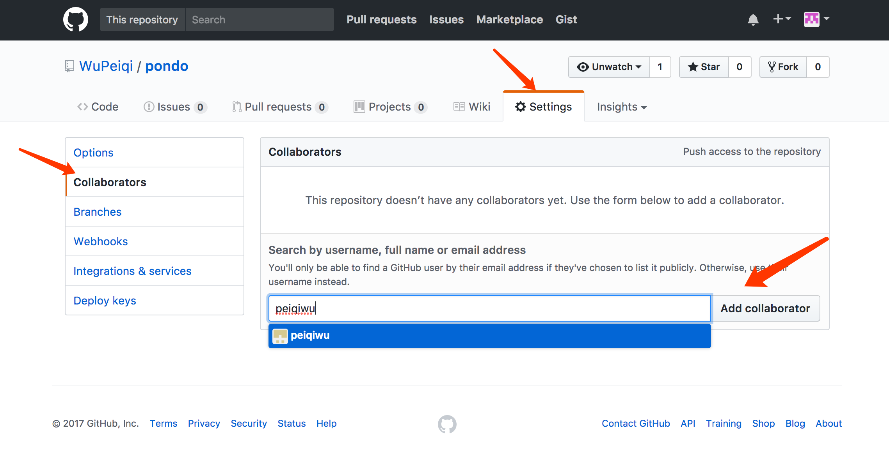 - 组织，创建一个组织，然后再该组织下可以创建多个项目，组内成员可以向组内所有项目提交代码。PS：也可以对某个项目指定合作者
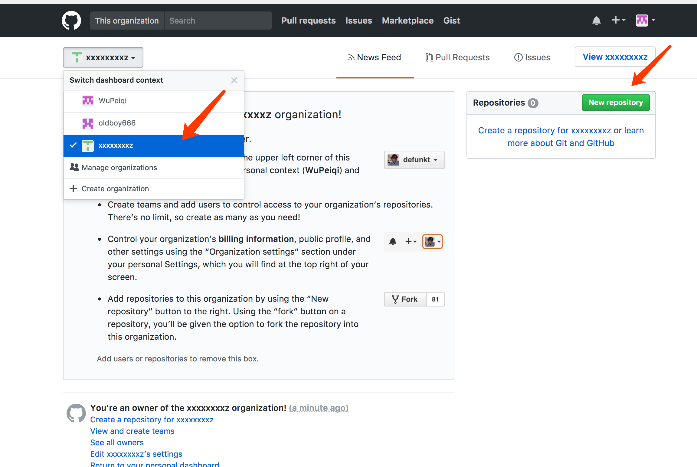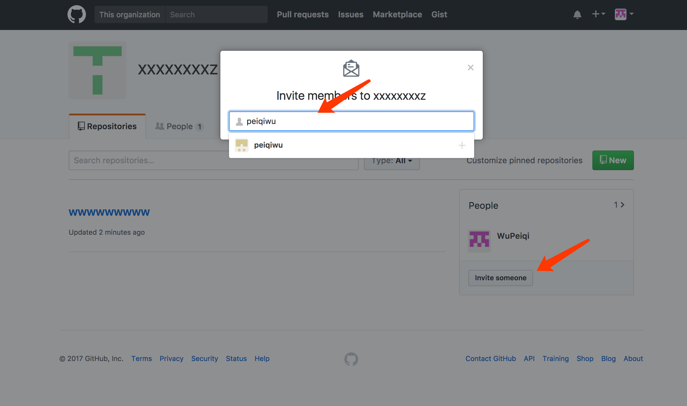
协同开发命令和以上步骤类似，此处就不再重新写代码，而是使用文件描述三人协同开发整个过程。
- 创建程序
- 用户A创建程序，提交到GitHub
- 用户B克隆项目
- 用户C克隆项目
- 开发功能
- 用户A开发功能1
- 用户B开发功能2
- 用户C开发功能3
- 提交
- 用户A提交功能1，并push（A用户手速快，先提交。）
- 用户B提交功能2，无法push，因为GitHub上已经有其他人提交的新代码。
解决方法：从GitHub上获取最新代码并合并到本地，提交自己开发的功能2。 - 用户C提交功能3，无法push，无法提交，因为GitHub上已经有其他人提交的新代码。
解决方法：从GitHub上获取最新代码并合并到本地，提交自己开发的功能3。 - 获取最新代码
- 用户A获取最新代码
- 用户B获取最新代码
- 用户C获取最新代码
在上面红色标注的解决方法位置可以有三种方式操作，三者都可以完成合并并提交新功能，但是日志记录会有差异，如：前两者版本记录中会出现合并，而第三种可以保证版本记录干净整洁。
- 先 git pull origin master 然后 git push origin master
- 先 git fetch origin master 然后 git merge origin/master 再 git push origin master
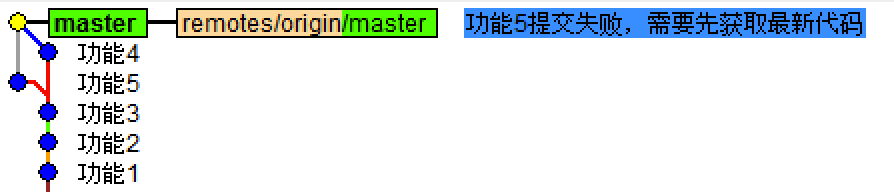12345678910111213141516用户A：touch4.pygit add .git commit -m'功能4'git push origin master用户B：touch5.pygit add .git commit -m'功能5'git push origin master# 报错，因为GitHub中已经有人提交新代码git pull origin mastergit push origin master - 先 git fetch origin master 然后 git rebase origin/master 再 git push origin master
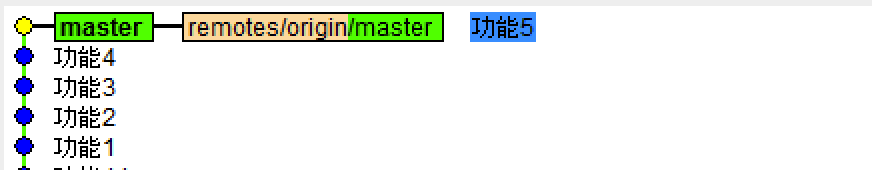123456789101112131415161718用户A：touch4.pygit add .git commit -m'功能4'git push origin master用户B：touch5.pygit add .git commit -m'功能5'git push origin master# 报错，因为GitHub中已经有人提交新代码git fetch origin mastergit rebase origin/mastergit push origin master
使用Git之小P创业上市期
终于终于小P等到了公司上市实现财务自由，但作为一个技术屌还是脱离不了屌丝的本质，所以每天都是逛逛github，看看别人有什么好的项目，自己可以给他挑挑bug装装逼，但是别人不可能给小P搞成合作者什么的，那怎么才能给别人贡献代码呢？那就是fork了。。。。
- 找到想搞的项目，fork一下，然后这个项目就在自己仓库出现了
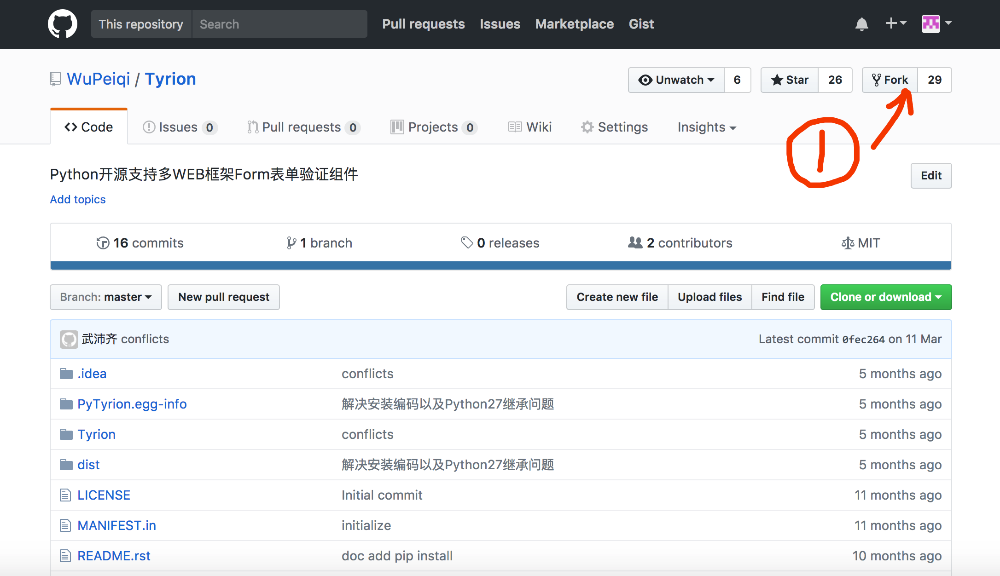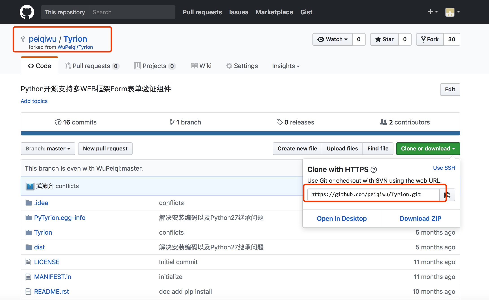 - 从自己仓库获取代码并进行编辑提交
- 创建并提交一个pull request，然后等待原作者是否同意这个pull request，如果同意那么在作者的源代码中就推出现小P提交的功能
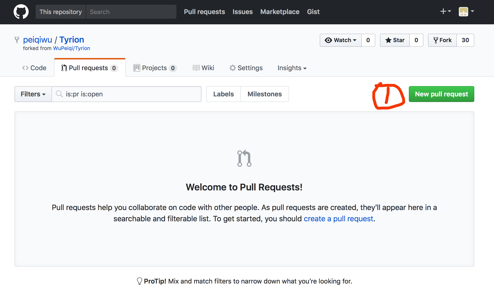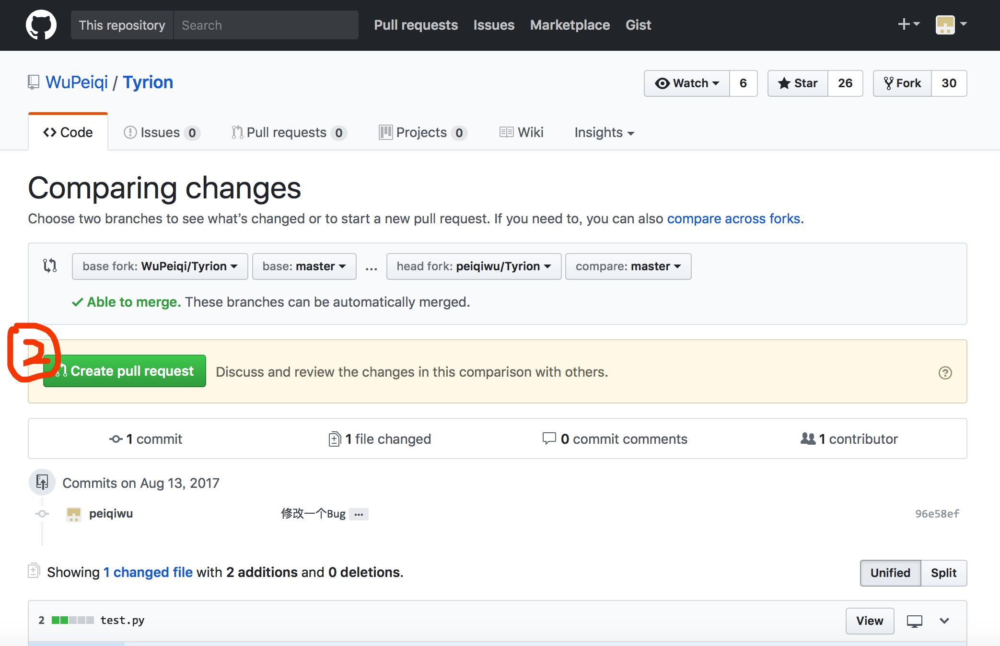
其他补充
1. 配置文件
Git的配置文件有三个：
- 系统配置： /private/etc/gitconfig
- 用户配置： ~/.gitconfig
- 项目配置：.git/config
2. 用户凭证
由于Git和Github交互操作可能会很频繁，那么一定少了用户授权的操作，为了防止每次操作重复输入用户名和密码，Git提供了两种解决方法：
- 秘钥
首先创建一对秘钥 ssh-keygen -t rsa，然后将 id_rsa.pub (公钥)内容拷贝到github中，日后操作无需再输入用户名和密码。
注意：这种方式需要使用GIt中 git@github.com:WuPeiqi/xxxxx.git 格式地址。 - 密码
Https访问git时，避免每次操作需要输入用户名和密码，可以在配置文件中添加如下配置项：
[credential]
helper = store/cache/第三方
store:
表示将用户名和密码保存在硬盘上
第一次输入过用户名和密码之后，用户名和密码就会保存在当前用户根目录的 .git-credentials 文件中，内容格式为：https://用户名:密码@github.com自动添加配置命令：git config credential.helper store
cache:
表示将用户名和密码保存在缓存中
第一次输入过用户名和密码之后，用户名和密码就会保存在缓存中，默认超时时间是 900 秒，缓存相关文件保存在当前用户根目录的 git-credential-cache 中
自动添加配置命令：
git config credential.helper cache
git config credential.helper 'cache --timeout=300'相关操作：
清除缓存：git credential-cache exit
指定超时：
[credential]
helper = cache --timeout=300
注意：
这种方式需要使用GIt中 https://github.com/WuPeiqi/xxxx.git 格式地址。
指定用户名和密码： https://用户名:密码@github.com/wupeiqi/xxx.git
就酱紫，以后想到再加吧...
以斜杠“/”开头表示目录； 以星号“*”通配多个字符； 以问号“?”通配单个字符 以方括号“[]”包含单个字符的匹配列表； 以叹号“!”表示不忽略(跟踪)匹配到的文件或目录；
git tag -a v1.0 -m '版本介绍' 本地创建Tag git show v1.0 查看 git tags -n 查看本地Tag git tag -l 'v1.4.2.*' 查看本地Tag，模糊匹配 git tag -d v1.0 删除Tag git push origin :refs/tags/v0.2 更新远程tag git checkout v.10 切换tag git fetch origin tag V1.2 git push origin --tags git pull origin --tags git clone -b v0.1